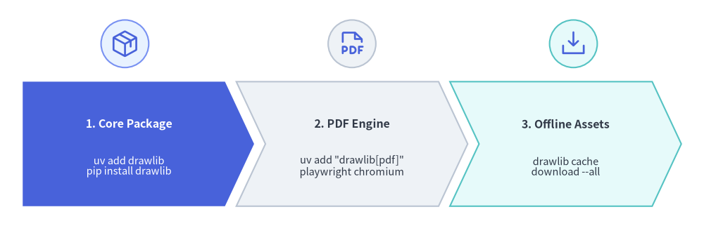
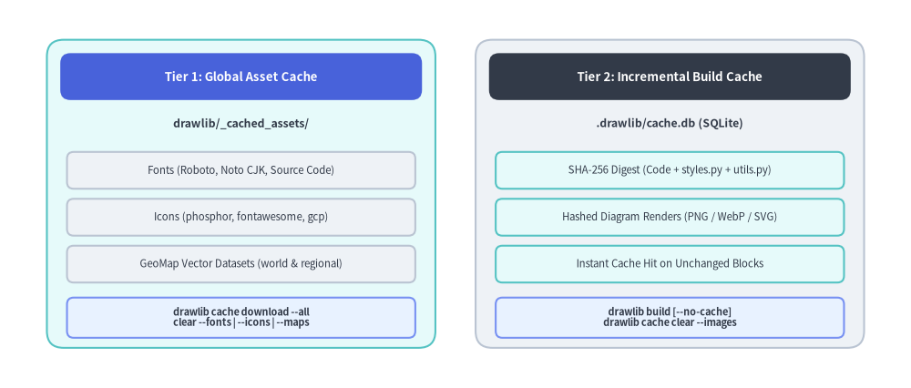

Installation Guide
Drawlib is published on PyPI and can be installed using uv (recommended) or standard pip.
This guide covers core package installation, optional headless PDF export dependencies, and offline asset caching.

Source Code
from drawlib.canvas import save, setup
from drawlib.icons import phosphor
from drawlib.shapes import circle
from drawlib.smartarts import ChevronProcess
from drawlib.styles import Styles
setup(width=124, height=40)
workflow = ChevronProcess(
style=Styles.Neutral,
text_style=Styles.DarkBold.patch(text_size=11.5),
description_style=Styles.Dark.patch(text_size=10.5),
corner_angle=65.0,
spacing=2.0,
flat_left_end=True,
)
workflow.add(
"1. Core Package",
description="uv add drawlib\npip install drawlib",
style=Styles.PrimaryFlat,
text_style=Styles.WhiteBold.patch(text_size=11.5),
description_style=Styles.White.patch(text_size=10.5),
)
workflow.add(
"2. PDF Engine",
description='uv add "drawlib[pdf]"\nplaywright chromium',
style=Styles.Neutral,
)
workflow.add(
"3. Offline Assets",
description="drawlib cache\ndownload --all",
style=Styles.SecondaryNeutral,
)
workflow.draw(xy=(4.0, 3.5), width=116.0, height=22.0)
# Step icons above each chevron stage
circle((22.0, 32.2), radius=4.2, style=Styles.PrimaryNeutral)
phosphor.package((22.0, 32.2), width=5.2, style=Styles.Primary)
circle((62.0, 32.2), radius=4.2, style=Styles.Neutral)
phosphor.file_pdf((62.0, 32.2), width=5.2, style=Styles.Primary)
circle((101.0, 32.2), radius=4.2, style=Styles.SecondaryNeutral)
phosphor.download_simple((101.0, 32.2), width=5.2, style=Styles.Primary)
save()
Requirements
- Python: Version 3.11 or higher.
- Operating System: Linux, macOS, or Windows.
1. Using uv (Recommended)
Add Drawlib to your current project dependencies:
# Add to active project
$ uv add drawlib
# Verify installation and CLI version
$ uv run drawlib --version
Standalone CLI Execution (uvx)
If you want to run the Drawlib CLI tool without adding it to a project:
$ uvx drawlib --version
$ uvx drawlib init site
2. Using pip
Install Drawlib into your virtual environment:
$ pip install drawlib
# Verify installation
$ drawlib --version
3. Optional PDF Export Support
Drawlib includes built-in support for compiling Markdown documents into standalone PDF publications via headless Chromium.
To enable PDF generation (drawlib build pdf):
# When using uv:
$ uv add "drawlib[pdf]"
$ uv run playwright install chromium
# When using pip:
$ pip install "drawlib[pdf]"
$ playwright install chromium
4. Asset & Build Cache Management (drawlib cache)
To maintain a minimal PyPI package size, high-resolution icon sets (Phosphor, FontAwesome, and official Google Cloud icons), multilingual fonts, and geographic map datasets are downloaded on demand upon first use and cached inside drawlib/_cached_assets/ (managed via drawlib cache). Meanwhile, project-local incremental diagram builds are cached separately in .drawlib/cache.db.

Source Code
from drawlib.canvas import save, setup
from drawlib.icons import phosphor
from drawlib.shapes import rectangle
from drawlib.styles import Styles
from drawlib.text import text
setup(width=126, height=54)
hdr_ts = Styles.WhiteBold.patch(text_size=11.5)
path_ts = Styles.DarkBold.patch(text_size=10.5, halign="left")
row_ts = Styles.Dark.patch(text_size=10.5)
cmd_ts = Styles.DarkBold.patch(text_size=10.0)
# Left container: Tier 1 Global Asset Cache
rectangle((32.0, 27.0), width=58.0, height=48.0, style=Styles.SecondaryNeutral.patch(shape_r=2.0))
rectangle((32.0, 46.5), width=54.0, height=5.8, style=Styles.PrimaryFlat.patch(shape_r=1.2), text="Tier 1: Global Asset Cache", text_style=hdr_ts)
phosphor.folder_user((9.5, 39.5), width=4.8, style=Styles.Primary)
text((13.5, 39.5), "drawlib/_cached_assets/", style=path_ts)
rectangle((32.0, 32.5), width=54.0, height=5.6, style=Styles.Neutral.patch(shape_r=1.0), text="Fonts (Roboto, Noto CJK, Source Code)", text_style=row_ts)
rectangle((32.0, 25.5), width=54.0, height=5.6, style=Styles.Neutral.patch(shape_r=1.0), text="Icons (Phosphor, FontAwesome, GCP)", text_style=row_ts)
rectangle((32.0, 18.5), width=54.0, height=5.6, style=Styles.Neutral.patch(shape_r=1.0), text="GeoMap Vector Datasets (World & Regions)", text_style=row_ts)
rectangle((32.0, 9.5), width=54.0, height=7.8, style=Styles.PrimaryNeutral.patch(shape_r=1.0), text="drawlib cache download --all\nclear --fonts | --icons | --maps", text_style=cmd_ts)
# Right container: Tier 2 Project Incremental Build Cache
rectangle((94.0, 27.0), width=58.0, height=48.0, style=Styles.Neutral.patch(shape_r=2.0))
rectangle((94.0, 46.5), width=54.0, height=5.8, style=Styles.DarkFlat.patch(shape_r=1.2), text="Tier 2: Incremental Build Cache", text_style=hdr_ts)
phosphor.database((71.5, 39.5), width=4.8, style=Styles.Primary)
text((75.5, 39.5), ".drawlib/cache.db (SQLite)", style=path_ts)
rectangle((94.0, 32.5), width=54.0, height=5.6, style=Styles.SecondaryNeutral.patch(shape_r=1.0), text="SHA-256 Digest (Code + styles + utils)", text_style=row_ts)
rectangle((94.0, 25.5), width=54.0, height=5.6, style=Styles.SecondaryNeutral.patch(shape_r=1.0), text="Hashed Diagram Renders (PNG / WebP)", text_style=row_ts)
rectangle((94.0, 18.5), width=54.0, height=5.6, style=Styles.SecondaryNeutral.patch(shape_r=1.0), text="Instant Cache Hit on Unchanged Blocks", text_style=row_ts)
rectangle((94.0, 9.5), width=54.0, height=7.8, style=Styles.PrimaryNeutral.patch(shape_r=1.0), text="drawlib build [--no-cache]\ndrawlib cache clear --images", text_style=cmd_ts)
save()
You can inspect, pre-fetch (e.g. for offline builds, Docker images, or CI/CD pipelines), and clear both caches via drawlib cache:
# Inspect cached font, icon, and map packages
$ uv run drawlib cache list
# Pre-download all font, icon, and map packages
$ uv run drawlib cache download --all
# Or pre-download specific asset categories selectively
$ uv run drawlib cache download --fonts
$ uv run drawlib cache download --icons
$ uv run drawlib cache download --maps
# Clear project-local incremental diagram build cache (.drawlib/cache.db)
$ uv run drawlib cache clear --images
# Clear all caches (downloaded font/icon/map assets + SQLite image build cache)
$ uv run drawlib cache clear --all
5. Verifying Installation
Verify that the Drawlib CLI commands and rule guides are accessible:
$ uv run drawlib --help
$ uv run drawlib rules list